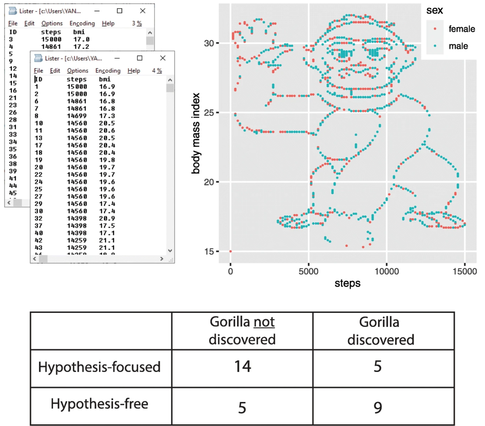

s02: Data Analysis
Contents
s02: Data Analysis#
This notebook goes through some minimal examples of the kinds of things we might want to do using data science approaches.
In particular, it briefly introduces analyzing data for the purposes of:
Prediction: to analyze available data in order to be able to make predictions about future dataClassification: to group and label data in useful and meaningful waysKnowledge Discovery: to seek to discover new knowledge about the data and the phenomena they represent
These are not the only tasks we might have in data science, but these examples do capture some of the key tasks when doing data science.
These examples will already start using packages in the Python data-science toolkit, and some simple algorithms to demonstrate example cases.
The goal here is show, in code, the outline of the kinds of things data science is interested in doing. You don’t yet need to be able to follow how the code works for these examples. These tools and algorithms will be more fully described and properly introduced in future notebooks.
%matplotlib inline
# Import numpy and matplotlib for some quick examples
import numpy as np
import matplotlib.pyplot as plt
Prediction#
Example Problem#
Let’s say we wanted to predict the weight of dogs, given that we know their length.
We could imagine, for example, in the case of a veterinary clinic, in some cases it might be easier to measure a dog with a tape measure, rather than to get it dog onto a scale, if we can then estimate the information we need.
So how do we go about making such predictions?
# We start with some data
lengths = [75, 50, 90, 115] # cm's
weights = [17.5, 10, 18, 20] # kg's
# Plot the data: Always visualize your data!
fig, ax = plt.subplots()
ax.plot(lengths, weights, '.', ms=15)
ax.set(xlabel='Length (cm)', ylabel='Weight (kg)',
xlim=[30, 125], ylim=[5, 25]);

# Polyfit (degree=1) will fit a linear fit to the data, of the form y = ax + b
# Once we fit this simple model to the data, we can use it to predict from new data points
a, b = np.polyfit(lengths, weights, 1)
# So now we can predict the weight of a new observation (a new dog)
new_length = 62
pred_weight = a * new_length + b
print('Predicted weight for a new data point, weight is {:1.2f}.'.format(pred_weight))
Predicted weight for a new data point, weight is 13.35.
# We can check how our prediction fits in with the data we observed
ax.plot(new_length, pred_weight, '.r', ms=15)
fig
# If we also happen to now the true weight of our test data, we can check how good our prediction is
actual_weight = 14.7
error = actual_weight - pred_weight
print('The (absolute) error of our prediction is {:1.2f} kilograms.'.format(error))
The (absolute) error of our prediction is 1.35 kilograms.
How we go about making predictions gets more complicated, as we deal with large, messy data with more variables of various ‘shapes’.
Fundamentally, though, it comes down to the same process: what can we learn from a set of data, such that, given a new peice of data, we can make predictions about it (and using test data with known answers to evaluate how good our predictive models are).
Classification#
Problem#
Let’s now imagine our local zoologist is investigating a group of squirrels.
She would like to know how many different species there are present in the population. However, she only has a limited set of basic data to work with.
We can try and cluster the data we have, and look for (what look like) meaningful groupings.
In this case, let’s imagine we were able to weigh and measure a selection of squirrels that otherwise look about the same.
Our task is then to analyze the data to see if there appear to be any meaningful groupings.
# We observe a bunch of squirrels with [height (cm), weight (grams)] pairs
data = np.array([[10., 600.], [16., 1200], [6., 800], [12., 700.], [17., 1400.],
[8., 500.], [20., 1500.], [21., 1300.], [11., 800.], [18., 1100.]])
# Visualize our data!
fig, ax = plt.subplots()
ax.plot(data[:, 0], data[:, 1], '.', ms=12)
ax.set(xlabel='Height (cm)', ylabel='Weight (g)',
xlim=[0, 25], ylim=[300, 1700]);

# Use scikit-learn to import a classification algorithm
from sklearn.cluster import KMeans
# Apply K-means clustering
# We'll come back to how this algorithm works later
kmeans = KMeans(2).fit(data)
---------------------------------------------------------------------------
AttributeError Traceback (most recent call last)
Input In [11], in <cell line: 3>()
1 # Apply K-means clustering
2 # We'll come back to how this algorithm works later
----> 3 kmeans = KMeans(2).fit(data)
File ~\anaconda3\lib\site-packages\sklearn\cluster\_kmeans.py:1404, in KMeans.fit(self, X, y, sample_weight)
1402 else:
1403 kmeans_single = _kmeans_single_lloyd
-> 1404 self._check_mkl_vcomp(X, X.shape[0])
1406 best_inertia, best_labels = None, None
1408 for i in range(self._n_init):
1409 # Initialize centers
File ~\anaconda3\lib\site-packages\sklearn\cluster\_kmeans.py:874, in _BaseKMeans._check_mkl_vcomp(self, X, n_samples)
872 n_active_threads = int(np.ceil(n_samples / CHUNK_SIZE))
873 if n_active_threads < self._n_threads:
--> 874 modules = threadpool_info()
875 has_vcomp = "vcomp" in [module["prefix"] for module in modules]
876 has_mkl = ("mkl", "intel") in [
877 (module["internal_api"], module.get("threading_layer", None))
878 for module in modules
879 ]
File ~\anaconda3\lib\site-packages\sklearn\utils\fixes.py:162, in threadpool_info()
160 return controller.info()
161 else:
--> 162 return threadpoolctl.threadpool_info()
File ~\anaconda3\lib\site-packages\threadpoolctl.py:124, in threadpool_info()
107 @_format_docstring(USER_APIS=list(_ALL_USER_APIS),
108 INTERNAL_APIS=_ALL_INTERNAL_APIS)
109 def threadpool_info():
110 """Return the maximal number of threads for each detected library.
111
112 Return a list with all the supported modules that have been found. Each
(...)
122 In addition, each module may contain internal_api specific entries.
123 """
--> 124 return _ThreadpoolInfo(user_api=_ALL_USER_APIS).todicts()
File ~\anaconda3\lib\site-packages\threadpoolctl.py:340, in _ThreadpoolInfo.__init__(self, user_api, prefixes, modules)
337 self.user_api = [] if user_api is None else user_api
339 self.modules = []
--> 340 self._load_modules()
341 self._warn_if_incompatible_openmp()
342 else:
File ~\anaconda3\lib\site-packages\threadpoolctl.py:373, in _ThreadpoolInfo._load_modules(self)
371 self._find_modules_with_dyld()
372 elif sys.platform == "win32":
--> 373 self._find_modules_with_enum_process_module_ex()
374 else:
375 self._find_modules_with_dl_iterate_phdr()
File ~\anaconda3\lib\site-packages\threadpoolctl.py:485, in _ThreadpoolInfo._find_modules_with_enum_process_module_ex(self)
482 filepath = buf.value
484 # Store the module if it is supported and selected
--> 485 self._make_module_from_path(filepath)
486 finally:
487 kernel_32.CloseHandle(h_process)
File ~\anaconda3\lib\site-packages\threadpoolctl.py:515, in _ThreadpoolInfo._make_module_from_path(self, filepath)
513 if prefix in self.prefixes or user_api in self.user_api:
514 module_class = globals()[module_class]
--> 515 module = module_class(filepath, prefix, user_api, internal_api)
516 self.modules.append(module)
File ~\anaconda3\lib\site-packages\threadpoolctl.py:606, in _Module.__init__(self, filepath, prefix, user_api, internal_api)
604 self.internal_api = internal_api
605 self._dynlib = ctypes.CDLL(filepath, mode=_RTLD_NOLOAD)
--> 606 self.version = self.get_version()
607 self.num_threads = self.get_num_threads()
608 self._get_extra_info()
File ~\anaconda3\lib\site-packages\threadpoolctl.py:646, in _OpenBLASModule.get_version(self)
643 get_config = getattr(self._dynlib, "openblas_get_config",
644 lambda: None)
645 get_config.restype = ctypes.c_char_p
--> 646 config = get_config().split()
647 if config[0] == b"OpenBLAS":
648 return config[1].decode("utf-8")
AttributeError: 'NoneType' object has no attribute 'split'
# This gives us a label each data point, as to which cluster it belongs to
kmeans.labels_
array([1, 0, 1, 1, 0, 1, 0, 0, 1, 0], dtype=int32)
# We can use these to split our dataset up into putative groupings
cl_1 = data[kmeans.labels_ == 0]
cl_2 = data[kmeans.labels_ == 1]
# And visualize the classification
fig, ax = plt.subplots()
ax.plot(cl_1[:, 0], cl_1[:, 1], '.b', ms=12)
ax.plot(cl_2[:, 0], cl_2[:, 1], '.r', ms=12)
ax.set(xlabel='Height (cm)', ylabel='Weight (g)',
xlim=[0, 25], ylim=[300, 1700])

In the above example, we tried to see if partition the data into two groups worked well and, visually, it looks quite reasonable!
Note, however, that properly evaluating classification is difficult. That is especially true in this case, since we don’t know the answer. That means this example is unsupervised - we don’t know the answer, or have any labels to learn these patterns in the data.
So, in this case, the answer looks plausible, but it’s hard to know if there really are two groups here. There could be more, or fewer. We’ll come back to how these analyses actually work and how to evaluate what you get out of them.
Knowledge Discovery#
Knowledge discovery is not necessarily methodologically distinct from prediction and classification. Seeking new knowledge will likely include analysis focused on classification and prediction, and other related analyses.
However, we can consider that the data science problems can have different contexts and approaches. Asking how predict one known variable from another (such as a dog’s weight from it’s length), or to classify data into a previously known categorization scheme (such as labeling different kinds of species) are tasks that use data science to answer previously known questions.
Sometimes, in data analyses, we also want to explore and discover new findings and ideas from a dataset without having pre-defined questions. We might try to ask about the structure of the data, or look for new patterns we didn’t know before. This is sometimes also called ‘exploratory data analysis’, as opposed to ‘hypothesis driven’ work.
In the second, “hypothesis-free,” group, students were simply asked: What do you conclude from the dataset?
Funny enough, if you would plot the data BMI vs. number of steps, the image of a gorilla emerged. It the students group with the hypothesis, 14 students did not discover the gorilla, while only 5 did. (5 to 9 in the hypothesis free group).
